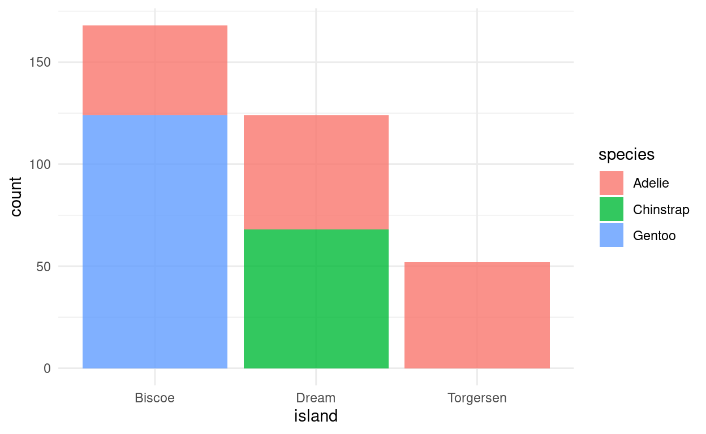
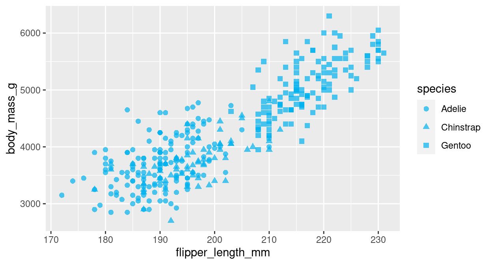
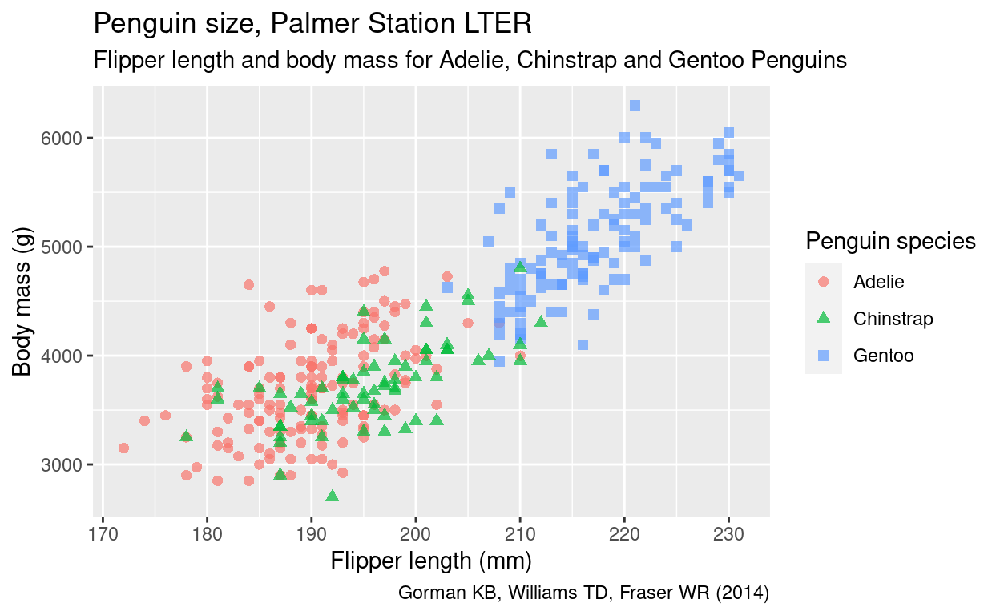
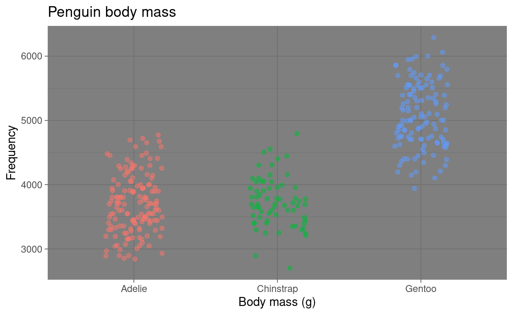
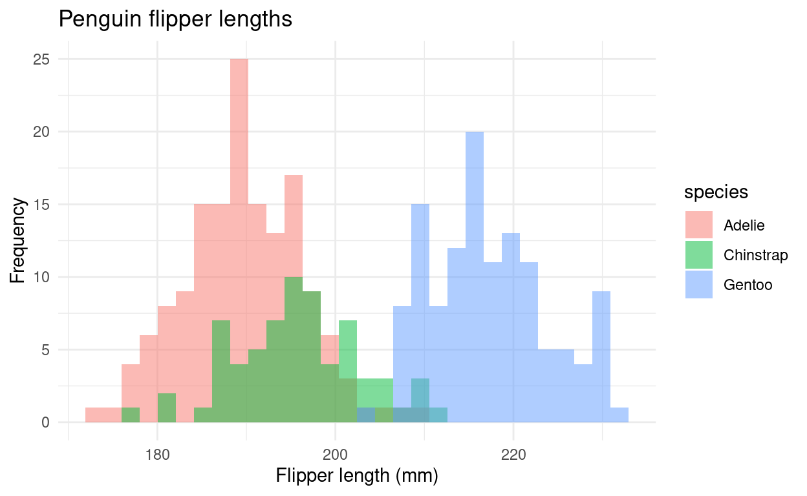
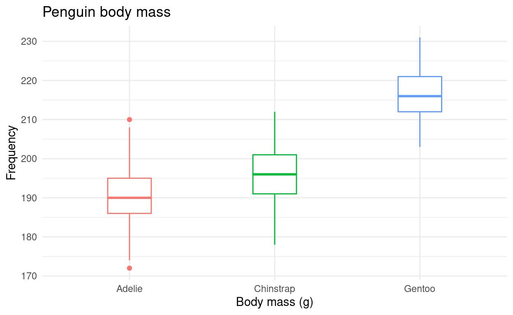
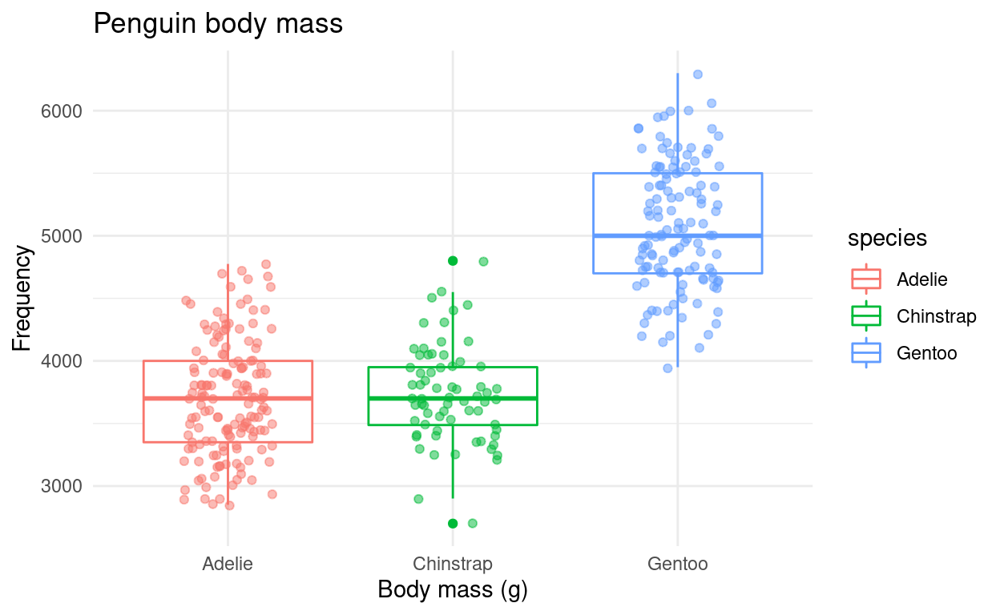
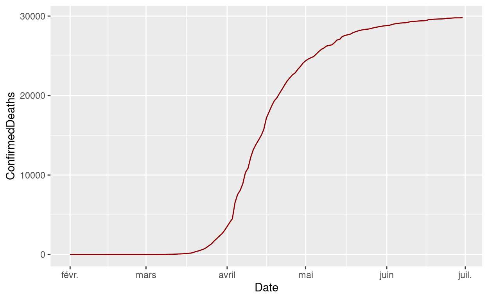
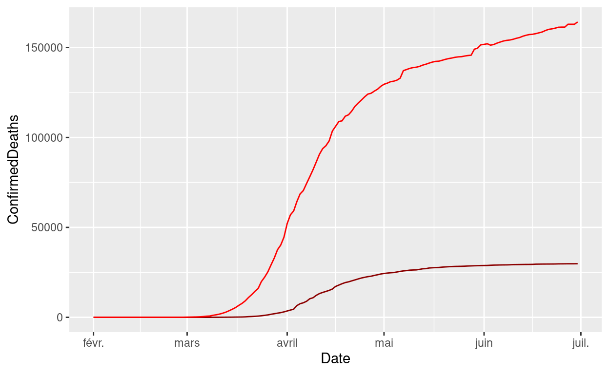
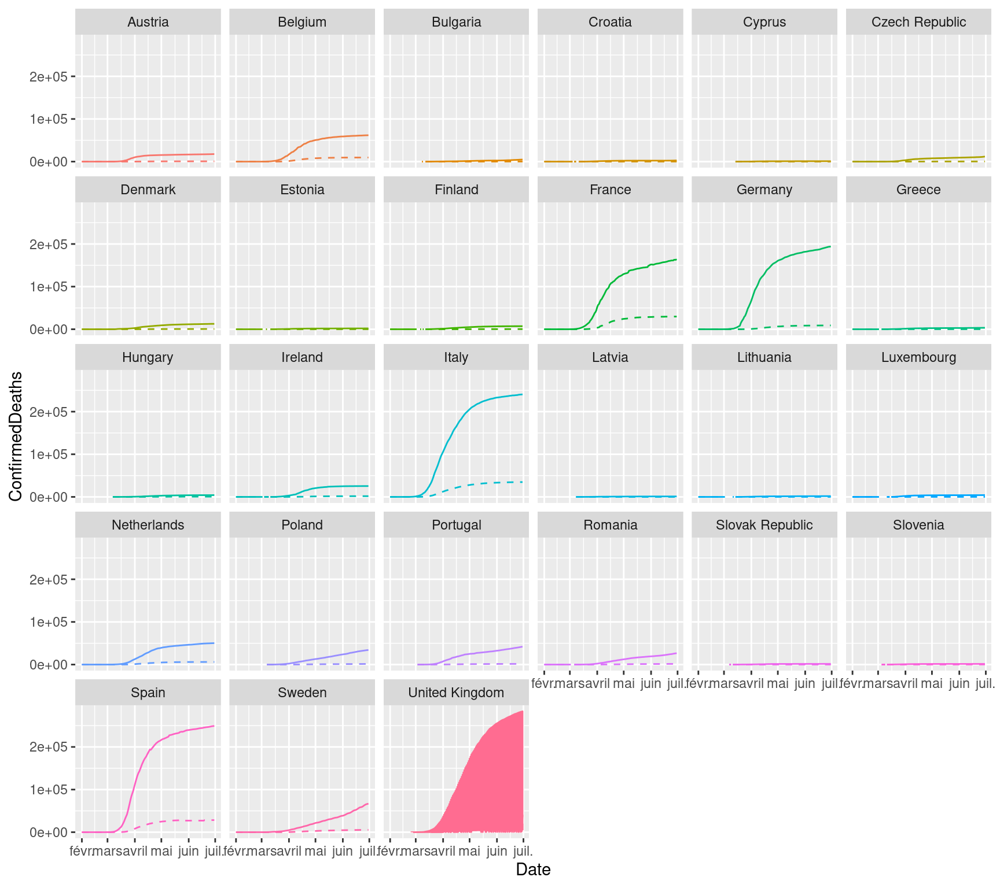

Configuration
Merci d’installer les packages suivants pour suivre ce tutoriel
install.packages("ggplot2")
install.packages("palmerpenguins")
install.packages("dplyr")
install.packages("tibble")
install.packages("DT")
install.packages('lubridate')library(ggplot2)
library(palmerpenguins)
library(tibble)
library(dplyr)
library(DT)
library(lubridate)Présentation de ggplot2
ggplot2 est un package créé par Hadley Wickham et Winston Chang pour implémenter dans R la vision développée par Leland Wilkinson dans The Grammar of Graphics (Statistics and Computing) de la conception de graphiques.
Le but est de fournir une approche unique pour produire quasiment toute valorisation graphique de données que l’on peut trouver dans des revues scientifiques, les journaux, dans l’analyse statistique ou la data visualisation.
Ce package s’inscrit aujourd’hui dans R par le framework tidyverse qui propose une approche cohérente entre l’importation et la préparation des données, leur analyse et leur valorisation.

le tidyverse
Présentation des datasets
Palmer Penguins
Le dataset palmerpenguins contient des mesures de tailles pour 3 espèces de pingouin observées sur 3 îles de l’archipel Palmer en Antarxtique

Les pingouins de l’archipel de Palmer. Artwork by [@allison_horst](https://www.github.com/allisonhorst).
Ces données ont été collectées entre 2007 et 2009 par Docteur Dr. Kristen Gorman avec le programme de recherche écologique à long terme de la station Palmer, une partie du réseau de recherche écologique à long terme des Etats Unis.
ELles ont été mises dans un package R palmerpenguins par Allison Horst et Alison Hill. Le dataset palmerpenguins::penguins contient 8 variables sur 344 pingouins (dont 333 observations complètes). Pour obtenir plus d’info sur les variables, vous pouvez taper ?penguins.
glimpse(penguins)## Rows: 344
## Columns: 8
## $ species <fct> Adelie, Adelie, Adelie, Adelie, Adelie, Adelie, Ade…
## $ island <fct> Torgersen, Torgersen, Torgersen, Torgersen, Torgers…
## $ bill_length_mm <dbl> 39.1, 39.5, 40.3, NA, 36.7, 39.3, 38.9, 39.2, 34.1,…
## $ bill_depth_mm <dbl> 18.7, 17.4, 18.0, NA, 19.3, 20.6, 17.8, 19.6, 18.1,…
## $ flipper_length_mm <int> 181, 186, 195, NA, 193, 190, 181, 195, 193, 190, 18…
## $ body_mass_g <int> 3750, 3800, 3250, NA, 3450, 3650, 3625, 4675, 3475,…
## $ sex <fct> male, female, female, NA, female, male, female, mal…
## $ year <int> 2007, 2007, 2007, 2007, 2007, 2007, 2007, 2007, 200…Le tableau de données se présente de la façon suivante :
Les données sont diffusées sous la licence CC0 license (“No Rights Reserved”) en accord avec la politique data de la station Palmer.
Citation recommandée pour le dataset : Gorman KB, Williams TD, Fraser WR (2014) Ecological Sexual Dimorphism and Environmental Variability within a Community of Antarctic Penguins (Genus Pygoscelis). PLoS ONE 9(3): e90081. https://doi.org/10.1371/journal.pone.0090081
Citation recommandée pour le package : Horst AM, Hill AP, Gorman KB (2020). palmerpenguins: Palmer Archipelago (Antarctica) penguin data. R package version 0.1.0. https://allisonhorst.github.io/palmerpenguins/. doi: 10.5281/zenodo.3960218.
Oxford COVID-19 Government Response Tracker (OxCGRT)
L’OxCGRT est un projet de la Blavatnik School of Government (Université d’Oxford). Il implique une centaine de membres qui mettent à jour en continu une base de données de 17 indicateurs sur les réponses gouvernementales pour faire face à la pandémie de la COVID-19.
Ces indicateurs reflètent les politiques d’endiguement telles que les fermetures d’écoles, des lieux de travail, des transports publics, les politiques de confinement ou encore l’annulation d’événements publics. Un indice de rigueur (Stringency Index) s’étalant de 0 à 100 est ensuite calculé à partir de ces 17 indicateurs. Il reflète, selon ses créateurs, le niveau de rigueur des gouvernements (et son évolution) pour faire face à la pandémie.
Chaque indicateur est calculé quotidiennement depuis le 1er janvier 2020, pour l’ensemble des pays du Monde. La base de données complète est disponible ici.
Pour cet atelier, nous travaillerons sur une extraction de ce jeu de données :
- La période de temps a été réduite du 1er février au 30 juin 2020
- L’extraction ne comporte que les données sur les pays de l’Union Européenne à 28 (GBR inclus)
- Certaines variables ont été supprimées pour simplifier le tableau
Vous pouvez télécharger l’extraction via ce lien, et/ou directement la charger dans R en utilisant son URL d’accès :
stringency_index <- read.csv("https://raw.githubusercontent.com/MaelTheuliere/ggplot_shs/master/introduction%20a%20ggplot%202/data/stringency_index.csv")Par défaut ici notre variable date n’est pas au bon format, on doit la convertir avec les fonctions du package {lubridate} :
stringency_index <- stringency_index %>%
mutate(Date = ymd(Date))Le tableau de données se présente de la façon suivante :
L’utilisation de ces données est soumise à la licence Creative Commons Attribution CC-BY.
Citation recommandée: Hale, Thomas, Noam Angrist, Emily Cameron-Blake, Laura Hallas, Beatriz Kira, Saptarshi Majumdar, Anna Petherick, Toby Phillips, Helen Tatlow, Samuel Webster (2020). Oxford COVID-19 Government Response Tracker, Blavatnik School of Government.
Les concepts clefs
Pour construire un graphique avec ggplot2, il faut définir plusieurs éléments :
la donnée : ggplot2 permet de travailler sur des vecteurs, des dataframes, des tibbles, ou des données spatiales ;
le mapping : on définit dans l’aesthetic (ou aes) le mapping, c’est à dire ce que l’on veut représenter qui dépend des variables (quelle variable sur l’axe x, sur l’axe y, quelle variable pour définir une graduation de couleurs…) ;
les paramètres : on définit les autres paramètres qui dépendent de constantes (par exemple : je veux que toutes mes lignes soient rouge ou de taille 2 pixels) ;
le layer (“forme géométrique”) : on définit sous quelle représentation graphique on représente les paramètres précédents. Sous
ggplot, ces fonctions sont de la formegeom_XX;
L’écriture type d’un graphique est donc:
ggplot(data = <DATA>) +
<FORME_GEO>(mapping = aes(<MAPPINGS>),...=<PARAMS>)On va ensuite pouvoir enrichir avec des fonctions supplémentaires. Chaque fonction s’enchaine avec des + comme les pipe.
ggplot(data = <DATA>) +
<FORME_GEO>(mapping = aes(<MAPPINGS>),...=<PARAMS>)+
<FONCTION1>+
...Le mapping
Les paramètres du mapping
Dans l’exemple qui suit, la représentation géographique utilisée est le nuage de points geom_point. D’autres types de représentations géographiques sont présentés dans la partie suivante.
L’aesthetic sert à identifier les variables que l’on souhaite représenter. Par exemple, si l’on souhaite représenter la longueur de la nageoire en fonction du poids des pingouins :
ggplot(data = penguins, aes(x = flipper_length_mm, y = body_mass_g)) +
geom_point()
De plus, la fonction aes admet d’autres arguments qui permettent de modifier l’apparence du graphique selon une 3ème variable du jeu de données. Par exemple :
- colour : la couleur,
- shape : la forme,
- size : la taille,
- alpha : la transparence,
- fill : le remplissage ;
ggplot(data = penguins) +
geom_point(aes(x = flipper_length_mm,
y = body_mass_g,
color = species,
shape = species)
)
Les “autres” paramètres
Il est possible de spécifier des paramètres qui seront valables pour l’ensemble du graphique. On retrouve entre autre les mêmes paramètres proposés dans l’aes, mais il faut alors les passer en dehors de l’aesthetic.
Par exemple, si l’on souhaite modifier la transparence et la taille de l’ensemble des points du graphique précédent, et que notre couleur soit une constante :
ggplot(data = penguins) +
geom_point(aes(x = flipper_length_mm,
y = body_mass_g,
shape = species),
color = "deepskyblue2",
size = 2,
alpha = 0.7)
Pour choisir et modifier facilement les couleurs d’un graphique, il existe un addin développé par Dean Attali: Colour Picker Il est installable comme n’importe quel package. Pour plus d’informations: https://github.com/daattali/colourpicker
Enrichir votre graphique
Rajouter un titre ou des libellés
Nous utilisons la fonction labs() qui permet de labelliser tous les éléments possibles de l’aesthétic, ainsi que le titre (title), le sous titre (subtitle) et le bas de page (caption). Nous pouvons via l’instruction labs() modifier aussi les libellés des axes et le titre de la légende en nommant les variables présentes dans l’aesthetic
ggplot(data = penguins) +
geom_point(aes(x = flipper_length_mm,
y = body_mass_g,
color = species,
shape = species),
size = 2,
alpha = 0.7) +
labs(title = "Penguin size, Palmer Station LTER",
subtitle = "Flipper length and body mass for Adelie, Chinstrap and Gentoo Penguins",
caption = "Gorman KB, Williams TD, Fraser WR (2014)",
x = "Flipper length (mm)",
y = "Body mass (g)",
color = "Penguin species",
shape = "Penguin species")
Modifier le thème
Plusieurs thèmes par défaut existent dans ggplot 2 vous permettant d’ajuster l’apparence de votre graphique. La liste des themes disponibles se trouve sur le site du package
ggplot(data = penguins) +
geom_point(aes(x = flipper_length_mm,
y = body_mass_g,
color = species,
shape = species),
size = 2,
alpha = 0.7) +
theme_minimal()+
labs(title = "Penguin size, Palmer Station LTER",
subtitle = "Flipper length and body mass for Adelie, Chinstrap and Gentoo Penguins",
caption = "Gorman KB, Williams TD, Fraser WR (2014)",
x = "Flipper length (mm)",
y = "Body mass (g)",
color = "Penguin species",
shape = "Penguin species")
A vous de jouer !
Prenez le dataset penguins et réaliser un nuage de point des pinguouins avec :
- en abscisse la longueur du bec
bill_length_mm - en ordonnée l’épaisseur du bec
bill_depth_mm - une forme des points en fonction de l’espèce
species
ggplot(data = penguins) +
geom_point(aes(x = bill_length_mm,
y = bill_depth_mm,
shape = species)
)Prenez le graphique précédent, et rajouter :
- une couleur en fonction du sexe
sex - une taille des points à 2.2
- une transparence à 0.5
- un thème, un titre, un sous titre et des libellés
ggplot(data = penguins) +
geom_point(aes(x = bill_length_mm,
y = bill_depth_mm,
color = sex,
shape = species),
size = 2.2,
alpha = 0.5)+
theme_minimal() +
labs(title = "Penguin bill dimensions",
subtitle = "Bill length and depth for Adelie, Chinstrap and Gentoo Penguins at Palmer Station LTER",
caption = "Gorman KB, Williams TD, Fraser WR (2014)",
x = "Bill length (mm)",
y = "Bill depth (mm)",
color = "Penguin species",
shape = "Penguin species") Les différents layers possibles
Vous avez deux moyens pour explorer les différentes formes de valorisations (layers) possibles avec R.
Le site de ggplot2 vous donne accès à l’ensemble des layers possibles et vous donne plusieurs exemples d’utilisation, vous donne aussi les paramètres possibles dans l’aes de chacun.


Le site from data to viz vous permet d’avoir une entrée en fonction des type de données que vous souhaitez valoriser
A vous de jouer !
A partir des sites précédents, refaire les graphiques suivants.
Diagramme barre
https://www.r-graph-gallery.com/barplot
## $x
## [1] "Island"
##
## $y
## [1] "Frequency"
##
## $title
## [1] "Penguin location"
##
## attr(,"class")
## [1] "labels"ggplot(penguins) +
geom_bar(aes(x = island, fill = species), alpha = 0.8) +
theme_minimal()
labs(x = "Island",
y = "Frequency",
title = "Penguin location")Histogramme
https://www.r-graph-gallery.com/histogram

ggplot(data = penguins) +
geom_histogram(aes(x = flipper_length_mm,
fill = species),
alpha = 0.5,
position = "identity")+
labs(x = "Flipper length (mm)",
y = "Frequency",
title = "Penguin flipper lengths")+
theme_minimal()box plot
https://www.r-graph-gallery.com/boxplot

ggplot(data = penguins) +
geom_boxplot(aes(x = species, y = flipper_length_mm,color = species), width = 0.3, show.legend = FALSE) +
theme_minimal() +
labs(x = "Species",
y = "Flipper length (mm)") +
theme_minimal() +
labs(x = "Body mass (g)",
y = "Frequency",
title = "Penguin body mass")box plot et jitter plot
https://www.r-graph-gallery.com/89-box-and-scatter-plot-with-ggplot2.html

ggplot(data = penguins) +
geom_boxplot(aes(x = species, y = body_mass_g, color = species)) +
geom_jitter(aes(x = species, y = body_mass_g, color = species), alpha = 0.5, show.legend = FALSE, position = position_jitter(width = 0.2, seed = 0)) +
theme_dark() +
labs(x = "Body mass (g)",
y = "Frequency",
title = "Penguin body mass")Enchainer plusieurs layer
Quittons nos penguins pour retrouver notre dur quotidien dans un monde sous covid-19 pour voir comment {ggplot} permet d’enchainer plusieurs layers.
Prenons ici le graphique de l’évolution du nombre de morts en France :
stringency_index %>%
filter(CountryName == "France") %>%
ggplot()+
geom_line(aes(x = Date,y=ConfirmedDeaths),color = 'dark red')
Pour rajouter à ce graphique celle du nombre de cas confirmés, je peux rajouter un nouveau geom_line() :
stringency_index %>%
filter(CountryName == "France") %>%
ggplot()+
geom_line(aes(x = Date,y=ConfirmedDeaths),color = 'dark red')+
geom_line(aes(x = Date,y=ConfirmedCases),color = 'red')
A vous de jouer !
Reproduire le graphique précédent pour la Grande Bretagne
stringency_index %>%
filter(CountryName == "Italy") %>%
ggplot()+
geom_line(aes(x = Date,y=ConfirmedDeaths),color = 'dark red')+
geom_line(aes(x = Date,y=ConfirmedCases),color = 'red')Reproduire le graphique précédent pour 4 pays différents : Allemagne, Espagne, France, Italie, avec la couleur pour identifier les pays et la forme du trait pour différencier les deux indicateurs.
stringency_index %>%
filter(CountryName %in% c("Germany","France", "Italy","Spain")) %>%
ggplot()+
geom_line(aes(x = Date,y=ConfirmedDeaths,color = CountryName),linetype=2)+
geom_line(aes(x = Date,y=ConfirmedCases,color = CountryName),linetype=1)Les graphiques à facette
Les graphiques à facette ou “small multiple” permettent de mettre en lumière la façon dont un phénomène va différer suivant les valeurs d’une variable catégorielle.
La fonction facet_wrap de {ggplot2} permet de réaliser des facettes en R.
Prenons l’exemple précédent, nous allons pouvoir réaliser un graphique à facettes sur l’ensemble des pays de notre jeux de donnée de cette façon
stringency_index %>%
ggplot()+
geom_line(aes(x = Date,y=ConfirmedDeaths,color = CountryName),linetype=2) +
geom_line(aes(x = Date,y=ConfirmedCases,color = CountryName),linetype=1) +
facet_wrap(~CountryName) +
theme(legend.position = 'none')